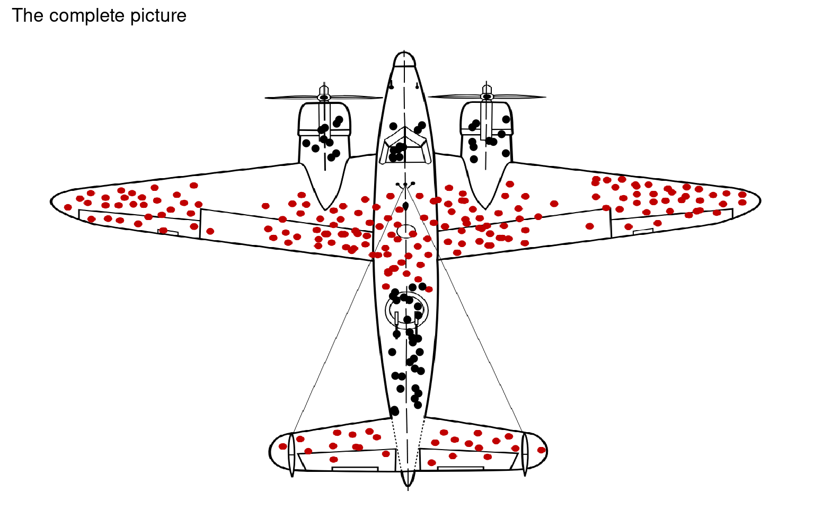

3 Data bias
Data analysis plays a critical role in driving decisions and generating insights, but the reliability of those conclusions depends heavily on the quality and integrity of the data. Bias in data, whether it’s introduced during collection, processing, or analysis, can significantly distort results and lead to misleading conclusions. Recognizing and mitigating common sources of bias is crucial for ensuring accurate and meaningful insights.
In this chapter, we will explore some of the most frequent sources of bias encountered in data analysis. These include missing data, where incomplete information can skew averages or hide important trends; omitted variable bias, which occurs when key factors influencing relationships are left out of analysis; and survivor bias, where focusing only on “survivors” or successful cases overlooks crucial information about those that were excluded or failed.
Understanding these biases helps data scientists, analysts, and researchers ensure that their models are robust and their interpretations are sound. By the end of this chapter, you’ll be equipped with the knowledge to identify and mitigate these common pitfalls, making your analyses more reliable and actionable.
3.1 Sampling Bias
3.1.1 Explanation:
Sampling bias occurs when the data collected does not properly represent the population you are studying. This often happens if certain groups are over- or underrepresented. For example, if you survey only college students to understand a city’s general population, your data will be biased because it doesn’t capture other demographics like older adults or people who do not attend college.
3.1.2 Why it matters:
Sampling bias leads to incorrect generalisations about the entire population, as conclusions are based on a skewed subset of data.
3.1.3 Example:
There are three locations with native foxgloves Digitalis purpurea and about 1000 plants in each site.
If we measured every single plant in each site we might find there is a slightly different average height at each location:
| Group | mean | sd |
|---|---|---|
| Location 1 | 50.16128 | 9.916950 |
| Location 2 | 60.42465 | 10.096742 |
| Location 3 | 69.79887 | 9.783575 |
3.1.4 Sampling
In a more likely scenario we will “sample”, measuring a subset of individuals from each location - however if we do this in an unrepresentative way (e.g. not taking 1/3 of our samples from each location) then we may skew or bias our results:
When we compare our results from an even sampling distribution to an uneven sampling distribution you can see we have biased our findings - in Location 3 the plants are slightly taller, but they are underrepresented in our sampling and so we have a smaller estimate of plant height.
3.2 Missing Not at Random (MNAR) Bias
3.2.1 1. Missing Completely at Random (MCAR):
Definition: Missing values occur entirely by chance, with no relationship to any other data in the dataset. Example in Palmer Penguins: Imagine if a researcher accidentally forgot to record the flipper length of some penguins on random days. The missing data isn’t related to the penguins’ species, size, or other characteristics. This is MCAR.
Why it matters: If data is MCAR, the missing values are less of a problem because they are truly random and do not introduce bias into the analysis.
3.2.2 2. Missing at Random (MAR):
Definition: The missingness is related to other observed data, but not to the missing value itself. Example in Palmer Penguins: Suppose the flipper length is more likely to be missing for certain species or on specific islands, but within those groups, it’s random. For example, maybe the flipper length is more often missing for penguins from the Adelie species. This would be MAR.
Why it matters: While the missing values aren’t completely random, they can be predicted based on other variables. If we know which variables are related to the missingness (e.g., species or island), we can handle it using imputation techniques.
3.2.3 3. Missing Not at Random (MNAR):
Definition: The missingness is related to the actual value of the missing data.
Example in Palmer Penguins: Imagine if the flipper length is missing because the researcher only skipped recording measurements for penguins with very small or very large flippers. This is MNAR because the missing values depend on the value itself (in this case, extreme flipper lengths).
3.2.4 Why it matters:
This type of missingness is the hardest to deal with because the missing data is biased and not random. Special techniques or assumptions are required to handle it correctly.
MCAR: Missing by pure chance, unrelated to any data.
MAR: Missingness depends on other known variables (e.g., species).
MNAR: Missingness depends on the value that is missing (e.g., missing small flipper lengths).
3.2.5 Explanation:
MNAR bias arises when data is systematically missing due to the value of the missing data itself. For instance, if people with extremely high incomes are less likely to report their income in a survey, this creates MNAR bias. The missing data is not random—it’s directly related to the variable being measured.
3.2.6 Why it matters:
MNAR bias distorts conclusions because certain trends are hidden in the missing data. Ignoring this can lead to underestimating the variability or misunderstanding the true patterns in the data.
3.2.7 Example:
A weather monitoring station cuts out/fails to record at extreme high and low temperatures. This is a good example of MNAR, the missing value temperature, is the thing that causes recording failure. In the example below we have the original, incomplete measurements:
And here we see the difference when the missing data is included, our original trend line was too flat, because it missed some seasonal fluctuations of high and low temperatures - we would have concluded temperature is more stable across the year than it really is.
3.3 Survivorship Bias
3.3.1 Explanation:
Survivorship bias occurs when you focus on the data points that survive a process and ignore those that did not. A famous example is from World War II, where analysts looked at the bullet holes on planes that returned from battle and suggested reinforcing areas where they saw damage. They overlooked the planes that didn’t return, which were hit in critical areas not visible on surviving planes.
3.3.2 Why it matters:
Focusing only on surviving or successful subjects can lead to false conclusions, as the failure cases (which provide crucial insights) are excluded from the analysis.
3.3.3 Example
During World War II, the military wanted to reinforce fighter planes to reduce the number of planes lost in combat. Engineers examined the planes that returned from battle and noted where the bullet holes were most concentrated. These planes had more damage in areas like the wings, tail, and fuselage, but relatively few bullet holes in the engine or cockpit areas.
At first, it seemed logical to reinforce the parts of the planes that had the most bullet holes, because that’s where the damage was most common. However, this would have been a mistake.
The Realization (Correct Conclusion):
The key insight came by realising they were only looking at planes that survived and returned from battle. The planes that had been shot in critical areas, such as the engine or cockpit, did not return — they were shot down. Therefore, the fact that the returning planes had little damage in those areas indicated that hits to these parts were fatal and led to planes being lost.

3.4 Outlier Bias
3.4.1 Explanation:
Outlier bias happens when extreme values (outliers) unduly influence the results of an analysis. Outliers can occur due to data entry errors, measurement errors, or true but rare events. For example, if you’re analyzing average income and a few extremely high incomes are present in the data, they can raise the average, making it seem like the typical person earns more than they actually do.
3.4.2 Why it matters:
Outliers can distort the results, especially when using statistical methods like the mean or regression. This can lead to misleading conclusions unless the outliers are properly handled.
3.4.3 Example:
In this trend line we can see how just a few extreme data points can alter the slope of association between two variables
3.4.4 What to do about it
Dealing with outliers is difficult - what we should never do is drop them from the dataset without careful consideration. First we should attempt to determine if they are impossible or simply improbable.
3.4.5 Example:
A measurement of human heights finds several values that are extremely large, more than 3 standard deviations from the mean or greater than 1.5X the IQR. This should prompt us to pay close attention to this data, but while it is extreme we should not discount it. However, by contrast a negative value or a height so large or small as to be impossible for a human being can be safely removed as an impossible value.
When we have excluded impossible values we should record this, implausible values will be kept for now until we know if they affect our analyses.
3.5 Omitted variable bias
3.5.1 Explanation:
Omitted variable bias occurs when a relevant variable is left out of an analysis, leading to incorrect conclusions. For example, a drug may appear ineffective if you don’t account for gender differences, but including gender in the analysis may reveal that the drug works well for women but not for men.
3.5.2 Why it matters:
Ignoring important variables can mask the true relationships between variables, leading to faulty interpretations and conclusions.
3.5.3 Example:
A new drug is being tested in a clinical trial setting and initial analysis indicates a weak positive effect
But when separated into clinically relevant subgroups such as gender we see that the drug does produce strong responses, but only in women, not including other important control variables can lead to over or underestimating effects, depending on how they interact.
3.6 Summary
Understanding bias in data and analysis is crucial because it helps ensure that conclusions drawn from data are accurate and reliable. Bias can distort results, leading to incorrect interpretations, faulty decisions, and misleading insights. Whether it’s selection bias, survivorship bias, or other forms, failing to account for bias can cause analysts to overlook critical information or make assumptions that don’t reflect the full reality. Recognising and addressing bias is key to maintaining the integrity of analysis and making well-informed, data-driven decisions.